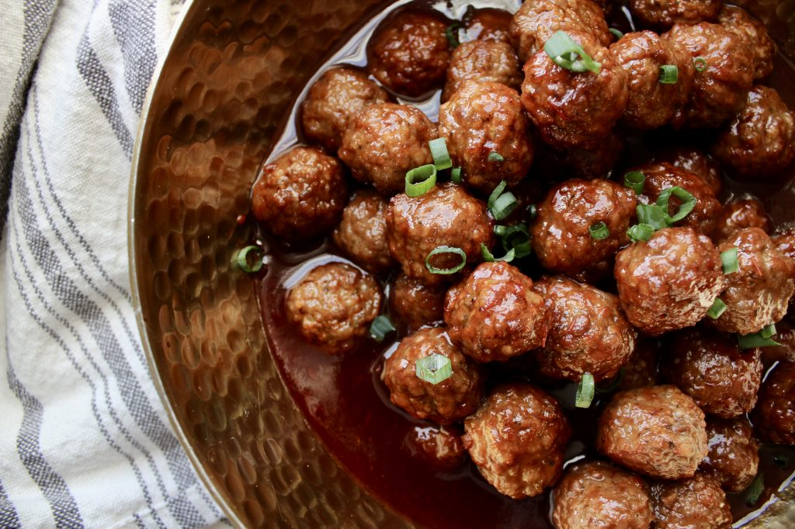

Cocktail Meatballs

Meatballs made with BBQ sauce and grape jelly. Get you ingredients and crockpot and let's get cooking!!!!
Ingredients
- 2 12 oz. bottles of bbq sauce
- 1 32 oz. of grape jelly
- 3-5 lbs. frozen cocktail meatballs
Steps
- Add frozen meatballs to crockpot
- In a large bowl, mix together bbq suace and grape jelly
- Dump sauce mixture onto frozen meatballs
- Cook on high heat for 3-4 hours or low head for 6-8 hours
- Enjoy!